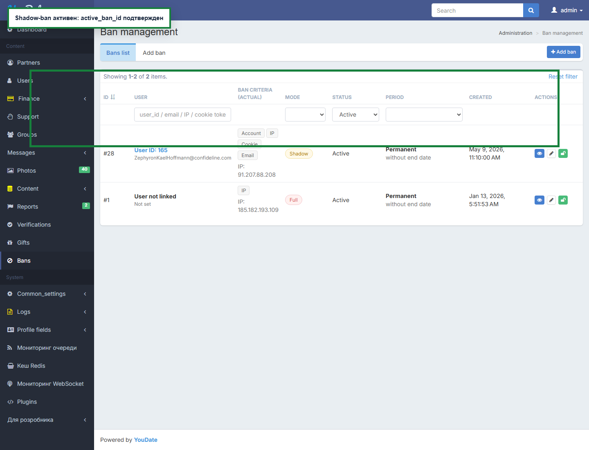
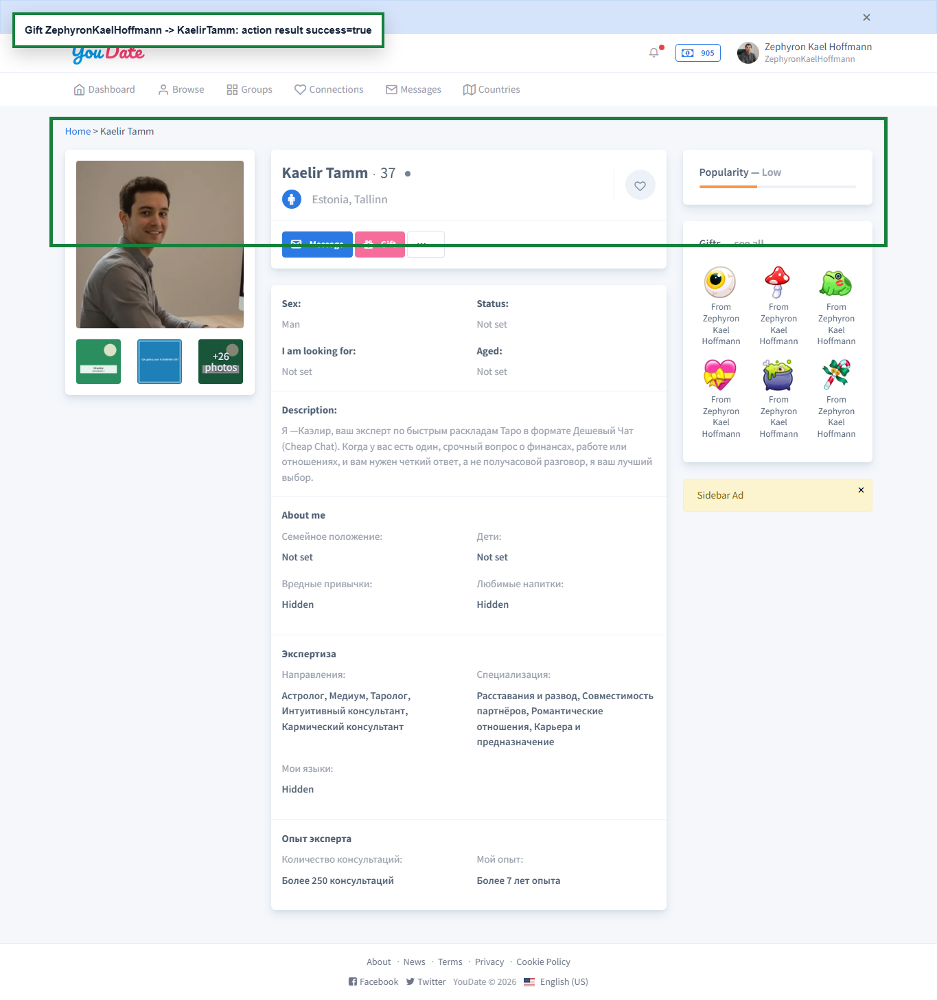
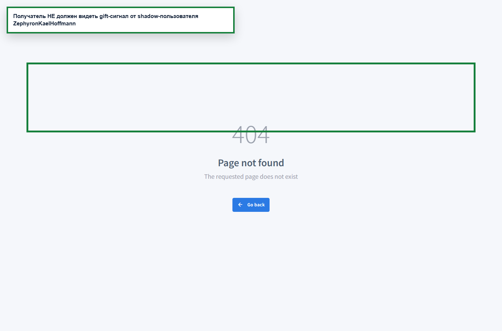
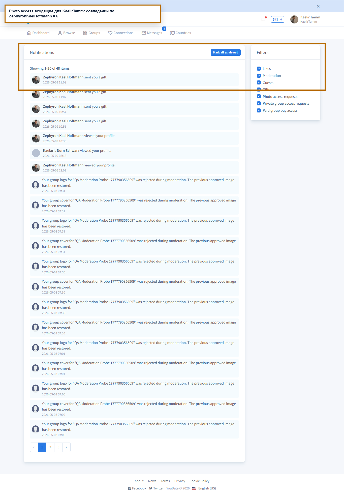
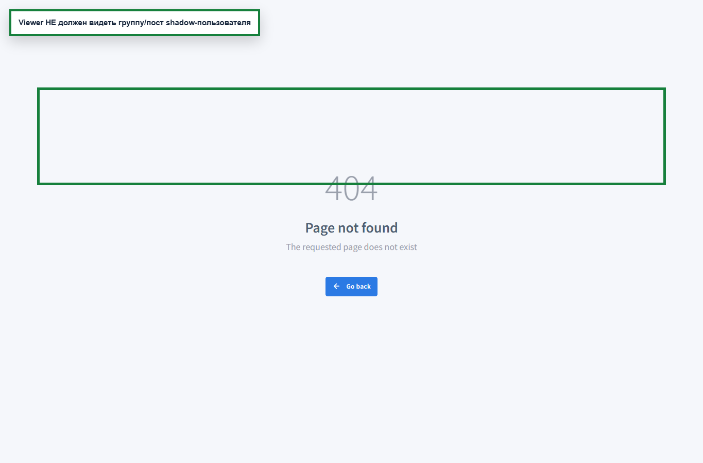
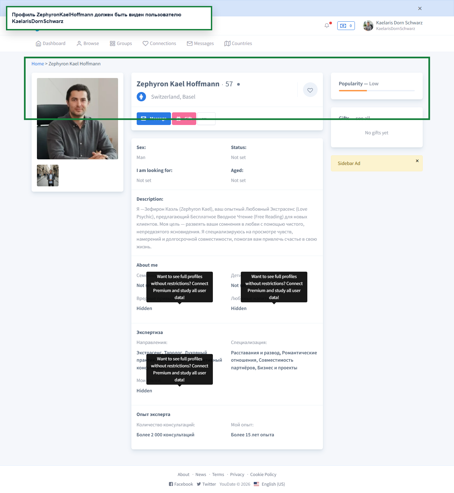

PASS
Shadow-ban создан
Admin создал активный shadow-ban для U1 и user-data подтвердил active_ban_id.

Confideline QA/BA · 2026-05-09
Повторный доказательный проход по shadow-ban после исправления тестового контура: отдельная Chromium-сессия, U1/U2/Admin, before/after, credits fixture, cleanup бана. Итог: критичных FAIL по shadow-ban не найдено; найден отдельный WARN по group-post baseline.
Shadow-ban сценарии прошли, но group-post baseline требует отдельного разбора.
U165 shadow, U167 recipient/baseline, U166 viewer.
После теста active_ban_id=false, профиль восстановлен.
Что работает: shadow-ban скрывает профиль U1 от U2; gift и photo access для U1 выглядят успешными и не создают нового видимого входящего эффекта у U2; группа U1 видна самому U1 и скрыта от viewer; после снятия бана профиль снова виден.
Что смотреть отдельно: group post publication. Контрольный обычный пользователь до shadow-ban создает пост, URL получает highlightPostId, но feed владельца показывает No posts yet. Это общий gap публикации/модерации постов групп, не доказанный shadow-ban баг.
Где искать: Yii2 flow /en/group/new-post?alias=..., модель/форма PostForm[content], сохранение/статус GroupPost, фильтр feed, moderation visibility и redirect на highlightPostId.
| Статус | ID | Что проверял | Комментарий |
|---|---|---|---|
| PASS | SHADOW-FIXTURE-BALANCE-READY | U1 имеет credits для gift-сценария | Баланс подготовлен через админку, чтобы не спутать shadow-ban с нехваткой credits. |
| PASS | SHADOW-PROFILE-BASELINE-VISIBLE | До shadow-ban профиль U1 доступен второму пользователю | Baseline подтвержден. |
| WARN | SHADOW-GIFT-BASELINE-RECIPIENT | До shadow-ban gift U1->U2 имеет recipient-side эффект | Baseline gift не дал сильного recipient evidence; shadow-check будет оценен осторожно. |
| WARN | GROUP-POST-BASELINE-OWNER-SEES | Обычный пользователь видит свою группу и пост до shadow-ban | Baseline group создана, но пост не виден в owner-side feed; shadow group post нельзя оценивать без учета этого дефекта/ограничения. |
| PASS | SHADOW-CREATE | Shadow-ban создан и подтвержден active_ban_id | |
| PASS | SHADOW-PROFILE-HIDDEN-FROM-VIEWER | Во время shadow-ban профиль U1 скрыт/недоступен для U2 | |
| PASS | SHADOW-GIFT-ACTOR-SEES-SUCCESS | Shadow user отправляет gift без явной ошибки | Для U1 действие выглядит успешным. |
| PASS | SHADOW-GIFT-HIDDEN-FROM-RECIPIENT | Gift от shadow user не виден получателю | |
| PASS | SHADOW-PHOTO-ACCESS-ACTOR-SEES-SUCCESS | Shadow user делает photo access request без явной ошибки | |
| PASS | SHADOW-PHOTO-ACCESS-HIDDEN-FROM-OWNER | Photo access request от shadow user не создает нового видимого входящего эффекта владельцу | После запроса количество совпадений по shadow user у владельца не выросло. |
| PASS | SHADOW-GROUP-OWNER-SEES-OWN | Shadow user видит созданную им группу | |
| WARN | SHADOW-GROUP-POST-OWNER-SEES-OWN | Shadow user видит/создает пост в своей группе | Пост owner-side не найден и у обычного baseline пользователя; это общий group-post gap, не доказанный shadow-ban баг. |
| PASS | SHADOW-GROUP-HIDDEN-FROM-VIEWER | Группа/пост shadow user скрыты от второго пользователя | |
| PASS | SHADOW-RELEASE-CLEAN-EXTENDED | Shadow-ban снят после расширенного прохода | |
| PASS | SHADOW-PROFILE-RESTORED-AFTER-RELEASE | После снятия shadow-ban профиль U1 снова виден U2 |
Admin создал активный shadow-ban для U1 и user-data подтвердил active_ban_id.

U2 открывает профиль U1 во время shadow-ban и получает скрытие/недоступность, до бана и после снятия профиль виден.

После пополнения баланса U1 отправляет gift во время shadow-ban без явной ошибки.

У получателя нет уникального сообщения текущего gift, старые совпадения по имени не считаются доказательством.

Запрос photo access выглядит успешным для U1, но у владельца количество входящих совпадений по U1 не выросло.

Даже обычный пользователь до shadow-ban создает post с highlightPostId, но owner-side feed показывает No posts yet. Поэтому shadow group post не закрывается как отдельный shadow-ban баг.

U1 во время shadow-ban видит свою группу, второй пользователь группу/пост не видит.

После release active_ban_id=false, профиль U1 снова доступен U2.
